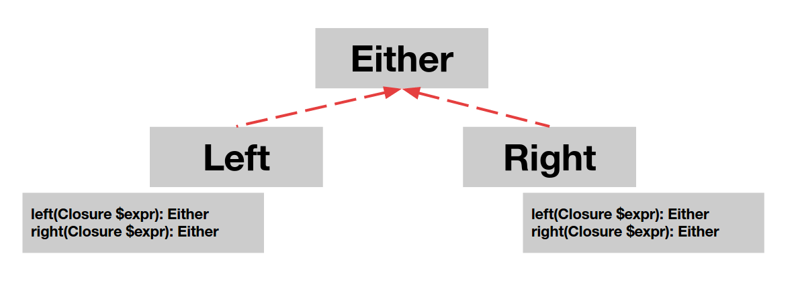

The problem
There are situations when you want to return data that is of a one type or another. Sounds weird but there is even a specific syntax solution for this problem in a PHP (multiple catch is helpful, but Either is more general and clean). The most popular situation for using Either is a moment when you want to return a proper data, or an error of some sort. The usual solution for situation when you'd like to return a value of a one type or another is a strategy design pattern (and it's worth to be familiar with strategy - maybe that's what you actually need in your situation). But the problem arises when your two kinds of result are'nt connected in any meaningful way (you'll destroy you model when you'll mix those two things so they want to cooperate when implementing a common interface).
As it was already said - the most popular situation when you want to use Either is error handling (and btw. this is the best, in mathematical point of view, way to handle unexpected situations).
Either monad
Either is very similar to Option with a slight difference. When Option could contain something or not,
either contains something always, but it's content may be one of two types.
To determine when you want to modify a content of a left side, or right side you use left or right - which
works like map for option (but for a specified side). When your value if of Right type and you run left on it
nothing is happening. When your value is of Right type and you run right on it, the value is mapped.
Both methods left and right have their equivalent for
flattening nested monads which are called flatLeft and flatRight.

Learn by example
Let's consider a following situation.
You have a service that updates a book data by it's id.
Happy path is that you just give an id, payload with new values and you receive an instance of a BookInfo class.
Things that may go wrong:
- there is no such book in a DB
- client sent invalid input data
- user have no access to edit this resource
So we have a following data structures:
class BookId {
private $val;
public function __construct(string $val) {
$this->val = $val;
}
public function getVal(): string {
return $this->val;
}
}
class BookInfo {
protected $id;
protected $name;
protected $author;
public function __construct(
BookId $id,
string $name,
string $author
) {
$this->id = $id;
$this->name = $name;
$this->author = $author;
}
... getters for $id, $name and $author
}
You should also define a service specific errors:
interface BookUpdateError {}
class BookNotFound implements BookUpdateError {}
class InvalidInput implements BookUpdateError {}
class NotAuthorized implements BookUpdateError {}
So our method definition looks in a following way:
public function updateBook(BookId $bookId, BookInput $input, User $requestor): Either;
When we'll have generic types in PHP (or if you already have it because you use HHVM) this code is going to look like:
public function updateBook(BookId $bookId, BookInput $input, User $requestor): Either<BookUpdateError, BookInfo>;
Either class is an abstract class, so your method can actually return a Left with BookUpdateError inside or
Right with BookInfo inside. Let's consider a following, very naive implementation of this method:
public function updateBook(BookId $bookId, BookInput $input, User $requestor): Either {
return $bookId < 10
? new Right($this->booksDao->findById($bookId))
: new Left(new NotAuthorized());
}
You can of course end up with much more complicated method which would look like this:
public function updateBook(BookId $bookId, BookInput $input, User $requestor): Either {
return $this
->booksDao
->findById($bookId) //returns Option<BookInfo>
->map(function(BookInfo $bookInfo) {
return new Right($bookInfo);
})
->getOrElse(new Left(new BookNotFound())) //this way we end up with Left<BookNotFound> or Right<BookInfo>
->flatRight(function(BookInfo $bookInfo) {
return $this->securityService->canEditBook($bookId, $requestor->getId())
? new Right($bookInfo)
: new Left(new NotAuthorized());
})
->flatRight(function(BookInfo $bookInfo) {
return $this->bookValidationService->valid($input)
? new Right($this->booksDao->update($bookId, $input))
: new Left(new InvalidInput());
});
}
To use a result of this method in a controller you probably want to write a code similar to this:
public function actionUpdateBook(string $bookId, Request $request): Response {
return $this
->bookUpdaterService
->updateBook($bookId, $this->bookRequestTransformer->toInput($request), $this->getUser())
->left(function(BookUpdateError $error) {
//handle error
})
->right(function(BookInfo $bookInfo) {
return new Response($this->bookInfoTransformer->toJson($bookInfo), Response::HTTP_OK);
})
->get();
}
As you see Either monad describes in a great way what is actually happening here.
In the example above we left an empty implementation of method responsible for mapping a left value of a updateBook
methods result, to make this example cleaner and easier to understand.
As we agreed previously BookUpdateError is just an interface and can't exist on it's own. So it natural for us
that for a Left result we can have few different errors that we'd like to handle in a different ways.
In this case pattern matching is helpful. Let's write down an action from an example above once again - this time with a complete error handling.
public function actionUpdateBook(string $bookId, Request $request): Response {
return $this
->bookUpdaterService
->updateBook($bookId, $this->bookRequestTransformer->toInput($request), $this->getUser())
->left(function(BookUpdateError $error) {
return Match::val($error)->of(
new TypeOf(BookNotFound::class, new Response(null, Response::HTTP_NOT_FOUND)),
new TypeOf(InvalidInput::class, new Response(null, Response::HTTP_BAD_REQUEST)),
new TypeOf(NotAuthorized::class, new Response(null, Response::HTTP_UNAUTHORIZED))
);
})
->right(function(BookInfo $bookInfo) {
return new Response($this->bookInfoTransformer->toJson($bookInfo), Response::HTTP_OK);
})
->get();
}
Pretty clean, huh? But someone can say we can do such things with regular PHP syntax.
This is how this code would probably look like with imperative approach instead of functional one:
public function actionUpdateBook(string $bookId, Request $request): Response {
try {
$bookInfo = $this
->bookUpdaterService
->updateBook($bookId, $this->bookRequestTransformer->toInput($request), $this->getUser());
// in this case updateBook method returns BookInfo or throws an exception
return new Response($this->bookInfoTransformer->toJson($bookInfo), Response::HTTP_OK);
} catch (BookNotFound $e) {
return new Response(null, Response::HTTP_NOT_FOUND);
} catch (InvalidInput $e) {
return new Response(null, Response::HTTP_BAD_REQUEST);
} catch (NotAuthorized $e) {
return new Response(null, Response::HTTP_UNAUTHORIZED);
}
}
Does a code from the last example look bad? No, but this approach has some downsides typical to imperative programming.
- Either monad is a clean indicator that you deal with a method that can return a result or an error. When you throw exceptions you, or other developers in you team have to know that your method throws exceptions. Dockblocks with @throw may be helpful, but applications tend to be more and in a bigger project you can never be sure if some of methods you rely on won't suddenly throw something.
- Exceptions are designed for breaking an execution of a code due to a serious reasons like DB connection errors or other quite unexpected runtime errors. You probably already heard that you should'nt implement business logic with exceptions. This is exactly this situation. This is quite popular to handle service errors with exceptions, but let's think about it this way:
- what kind of error is an invalid input?
- is it really an application error when there is no document in database for a given id?
- is it really an application error when user has no access to specified resource?
All answers for this questions are
NOso you probably should resign from throwing exceptions as well.
- Exceptions are not composable. With Either you can do a lot of stuff that reflects your business requirements (in a formalized and easy to reason about way) and reuse it in other places with no harm.
- All types which describe error situation have to extend Exception class, while in fact you may want to have your own errors data types which isn't related in type hierarchy to Exception in any way, and isn't bloated with fields and methods inherited from Exception class.